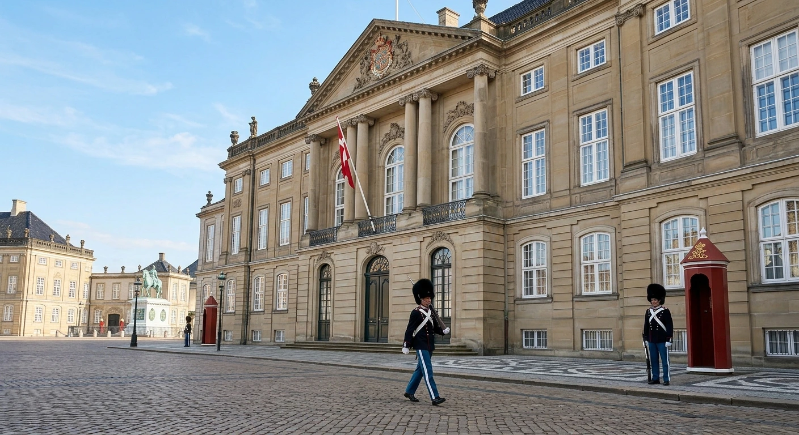
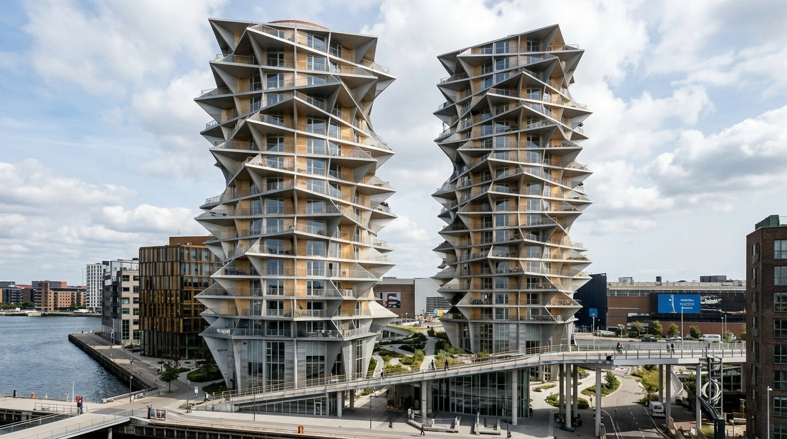

IKONISKE BYGNINGER

AMALIENBORG
Amalienborg i København blev opført i 1750'erne. Paladset består af fire næsten ens bygninger,
der ligger omkring en ottekantet
slotsplads med en statue
af kong Frederik V i midten.
Oprindeligt blev bygningerne opført som boliger for adelige
familier, men i 1794 flyttede
den danske kongefamilie ind efter en brand på Christiansborg Slot.
Siden da har
Amalienborg
været de danske kongers og
dronningers residens. I dag bor kongefamilien stadig på slottet, og besøgende kan opleve dele af
de kongelige gemakker
på museet. Mange kommer også for at se vagtskiftet, hvor Den Kongelige Livgarde marcherer gennem
byen. Amalienborg er et
vigtigt symbol på det danske monarki og en central del af Københavns historie.

MARMORKIRKEN
Marmorkirken i København, også kaldet Frederikskirken, blev påbegyndt i 1749. Kirken skulle være
en del af
Frederiksstaden, et nyt byområde.
Byggeriet blev forsinket på
grund af økonomiske problemer og stod stille i mange år, indtil kirken endelig blev færdig i
1894. Marmorkirken er især
kendt for sin store kuppel, som er blandt de største i Skandinavien.
Dengang skulle
kirken være
et imponerende religiøst
monument, og i dag bruges den stadig til gudstjenester, bryllupper og andre kirkelige
begivenheder. Den er også et
populært besøgssted, hvor mennesker kan opleve den smukke arkitektur og den historiske
atmosfære.
Marmorkirken er et
vigtigt vartegn i København og fortæller historien om byens kongelige planer og arkitektoniske
udvikling.

KAKTUSTÅRNERNE
Kaktustårnene er to moderne højhuse i København, som ligger ved Kalvebod Brygge tæt på havnen.
De blev bygget som
boliger og er kendt for deres særlige arkitektur, hvor altanerne drejer i forskellige retninger
og får bygningerne til
at ligne kaktusser. Tårnene er tegnet af det danske arkitektfirma BIG og stod færdige i 2023.
I
2024 vandt de en
international pris som Europas bedste høje bygning. Samtidig har de skabt stor debat om deres
udseende og er af
Arkitekturoprøret blevet kaldt Danmarks grimmeste byggeri.
Kaktustårnene viser derfor,
hvordan
moderne arkitektur kan
vække meget forskellige meninger.
I dag bruges de som boliger og er blevet et
markant syn i
Københavns havneområde.

RUNDETÅRN
Rundetårn i København blev opført mellem 1637 og 1642 på initiativ af kong Christian IV. Tårnet
blev bygget som et
astronomisk observatorium, hvor forskere kunne studere stjernerne og planeterne. Det blev også
en del af
Trinitatis-komplekset, som omfattede en kirke og et universitetsbibliotek.
Rundetårn er
især
kendt for sin snoede rampe,
der fører hele vejen op til toppen, hvor man kan nyde udsigten over København.
I gamle
dage blev
tårnet brugt af
astronomer og studerende, og i dag besøges det af både turister og lokale. Rundetårn fungerer
stadig som observatorium
og er samtidig et populært sted for udstillinger og kulturelle arrangementer. Det er et vigtigt
historisk vartegn, der
fortæller om Danmarks videnskab og arkitektur i 1600-tallet.

OPERAHUSET
Operaen i København blev indviet i 2005 og ligger på Holmen med udsigt over havnen og
Amalienborg. Operaen
er kendt for sin
imponerende arkitektur, det store tag og de lyse materialer, der giver bygningen et
karakteristisk udseende.
Indvendigt
findes en stor operasal, hvor publikum kan opleve opera, klassisk musik og ballet. I dag er
Operaen en vigtig del af Det
Kongelige Teater og bruges til forestillinger med både danske og internationale kunstnere. Den
er også blevet et kendt
vartegn i København, hvor både lokale og turister besøger området for at opleve
arkitekturen og
udsigten over vandet.
Operaen viser, hvordan København kombinerer moderne arkitektur med
byens
lange
tradition for kunst og kultur.

NYHAVN
Nyhavn i København blev anlagt mellem 1671 og 1673 på initiativ af kong Christian V. Kanalen blev
gravet af soldater og
svenske krigsfanger for at skabe en ny handelshavn tæt på Kongens Nytorv. Dengang sejlede
handelsskibe ind med varer,
som blev solgt og transporteret videre rundt i byen. Langs havnen opstod der pakhuse,
værksteder, værtshuse og boliger
for søfolk og handlende.
I dag er Nyhavn kendt for sine farverige historiske huse, gamle træskibe og hyggelige
restauranter. Området er et populært mødested for både turister og københavnere, og kanalen
bruges stadig af historiske
skibe.
Nyhavn fortæller derfor historien om, hvordan København har udviklet sig fra en
travl
handelsby til en moderne
hovedstad, hvor historie og byliv mødes.